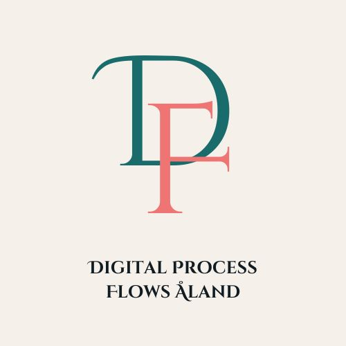
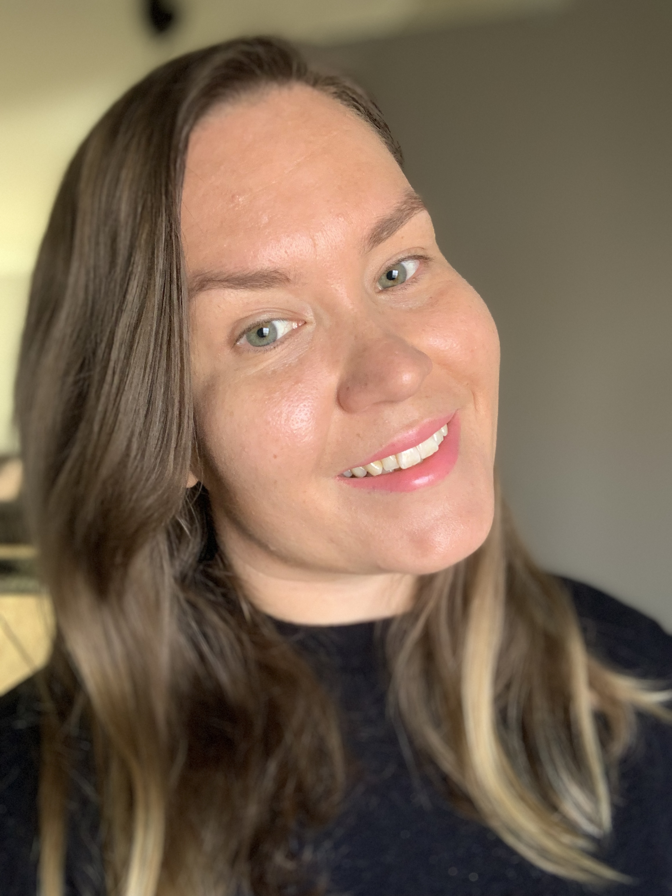

Processer · Digitalisering · ProjektstödDigital Process Flows Åland hjälper små och medelstora företag och organisationer utan egen teknisk expertis att ta tillvara möjligheterna med digitalisering och automatisering.
Jag möter er där ni är och hjälper er dit ni vill komma.
Jag kartlägger hur ni jobbar idag, identifierar flaskhalsar och designar effektivare flöden som faktiskt används.
Vilka manuella steg kan automatiseras? Jag hjälper er att välja rätt verktyg och genomföra förändringen utan onödiga risker.
Behöver ni en projektledare men inte på heltid? Jag kliver in i era projekt vid behov, håller ihop kravspecifikationen och ser till att de digitala delarna blir begripliga i diskussioner och beslut.
Bakom Digital Process Flows Åland

Med över tio års erfarenhet från logistik, handel, offentlig sektor, försäkring, fintech och hospitality har jag gång på gång sett hur manuella arbetssätt och otydliga processer bromsar verksamheter.
Jag flyttade till Åland 2018 från fastlandet och har sedan dess sett hur mycket potential som finns i det åländska näringslivet. Här finns korta beslutsvägar, nära samarbeten och en stark entreprenörsanda. Samtidigt saknar många verksamheter tid och stöd för att utveckla sina arbetssätt i takt med att de växer.
Under större delen av min karriär har jag arbetat med processutveckling, projektledning och kundtjänst. För att bättre kunna möta dagens digitala utmaningar kompletterade jag min erfarenhet med en IT-examen från ÅYS / grit:lab och arbetar idag som systemutvecklare.
Jag arbetar obehindrat på svenska, finska, engelska och tyska. Det gör mig till en smidig länk i projekt som rör både Åland, fastlandet och internationella samarbetspartners.
Erbjudanden
Tjänsterna ovan kombineras efter behov. Ett upplägg kan vara allt från ett litet första steg till hela resan.
Ett avgränsat uppdrag för er som vill se var ni står innan ni bestämmer nästa drag. Ni får en tydlig bild av era processer och var det finns mest att vinna.
Bygger på
Nuläget kartlagt och en prioriterad plan framåt. Ni vet både var ni står och vilka digitala steg som ger mest värde. Det blir ett tryggt underlag inför beslut.
Bygger på
Hela förändringen från början till slut. Jag följer med från första kartläggningen ända till att de nya arbetssätten sitter. Ni står aldrig ensamma i genomförandet.
Bygger på
Kontakt
Skicka ett mail så återkommer jag inom en arbetsdag.
Skriv gärna några rader redan i mailet, så kommer jag påläst till vårt första samtal: